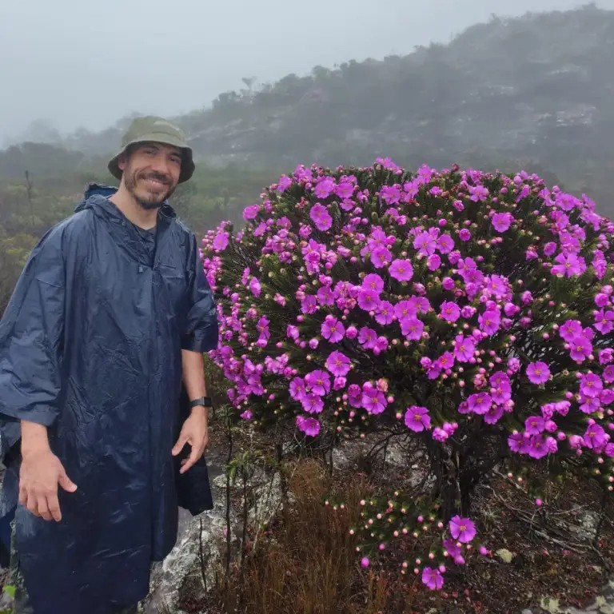

Vinícius Lourenço Garcia de Brito
Professor · Universidade Federal de Uberlândia (UFU)
Uberlândia, Minas Gerais, Brasil
- Ecologia de ecossistemas
- Biologia reprodutiva de angiospermas
- Ecologia da polinização
- Genética de populações
- Fenologia da floração
Sobre
Professor junto ao Instituto de Biologia da Universidade Federal de Uberlândia. Bacharel e licenciado em Biologia pela Universidade Estadual de Campinas (UNICAMP), com mestrado e doutorado pelo Programa de Pós-Graduação em Biologia Vegetal na mesma universidade, sob orientação de Marlies Sazima. Realizou pós-doutorado junto ao Programa de Pós-Graduação em Biologia Vegetal na Universidade Federal de Uberlândia. Foi bolsista CNPq, CAPES e FAPESP. Bolsista de Produtividade em Pesquisa do CNPq — Nível C.
Sua pesquisa atua principalmente nos temas de Ecologia de Ecossistemas, Biologia Reprodutiva e da Polinização de Angiospermas e Genética de Populações. O doutorado investigou estratégias reprodutivas em Melastomataceae com diferentes abordagens, e o mestrado focou na biologia da polinização, reprodução e genética de populações de Melastomataceae em gradiente altitudinal no sudeste do Brasil.
